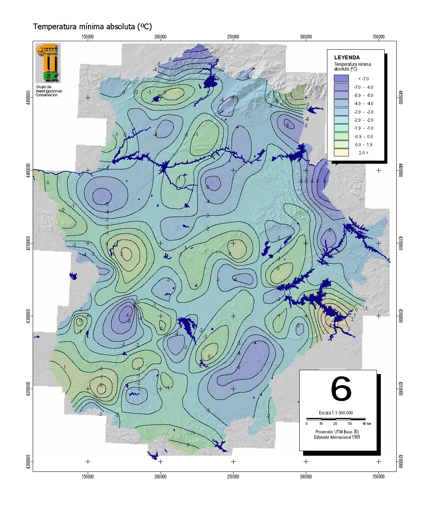

Los mapas temáticos se dividen en dos grandes grupos:
Mapas temáticos cuantitativos
Muestran aspectos espaciales de datos en escalas de medida ordinales o de intervalo; es decir, establecen relaciones de cantidad.
- Mapas coropléticos: Utilizan colores o sombreados para representar valores relativos o absolutos dentro de áreas geográficas, como regiones, provincias o países.
- Mapas de isolíneas o isopléticos: Utilizan líneas que conectan puntos con el mismo valor cuantitativo, como la temperatura, la altitud o la presión atmosférica.
- Mapas de puntos: Usan puntos para representar cantidades en un área. Cada punto puede tener un valor constante o relativo al fenómeno representado.
- Mapas de símbolos proporcionales: Utilizan símbolos de tamaño variable (círculos, cuadrados u otros) para indicar cantidades relativas o absolutas en ubicaciones específicas.
Mapas temáticos cualitativos
Representan condiciones, cualidades o características del terreno no mensurables.
- Mapas de clasificación o categorización: representan la distribución de categorías o clases de un fenómeno en diferentes áreas.
- Mapas de localización: Utilizan símbolos o marcadores para señalar la posición de elementos cualitativos en un área.
- Mapas de distribución o de áreas cualitativas:
Fuente: Nieto Masot, Ana & Paredes, Celeste. (2014)

Fuente: CieX estudios y proyectos
Fuente: Igualdad rural

Fuente: Igualdad rural

 Fuente: Igualdad rural
Fuente: Igualdad rural